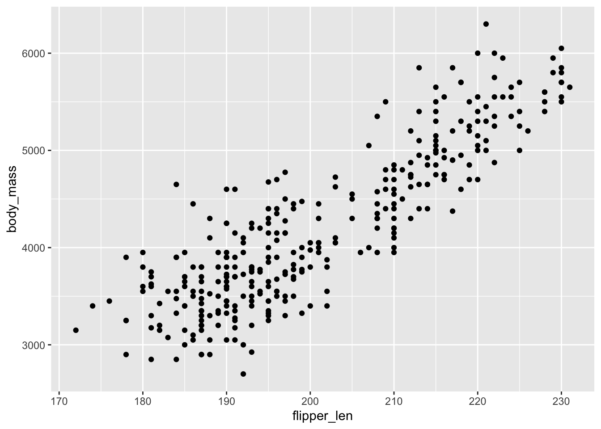
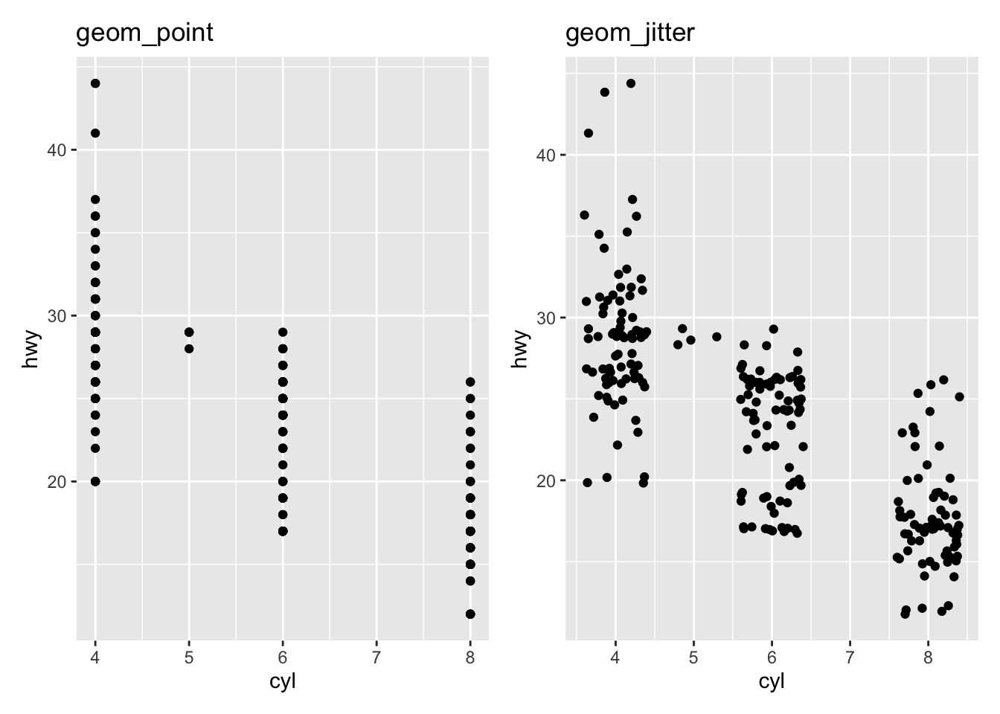
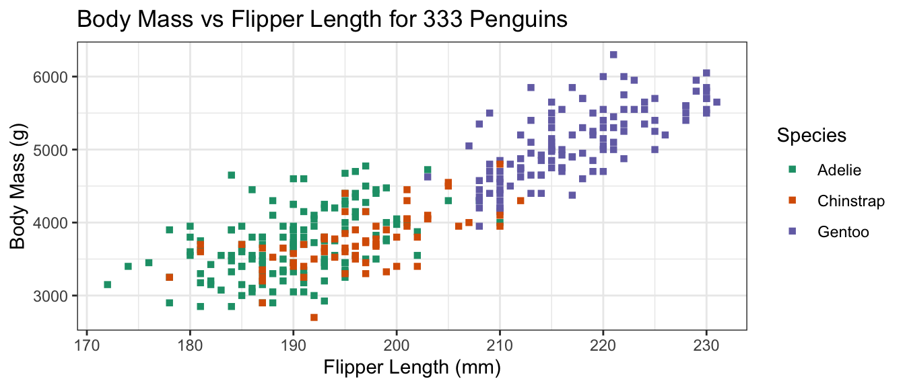
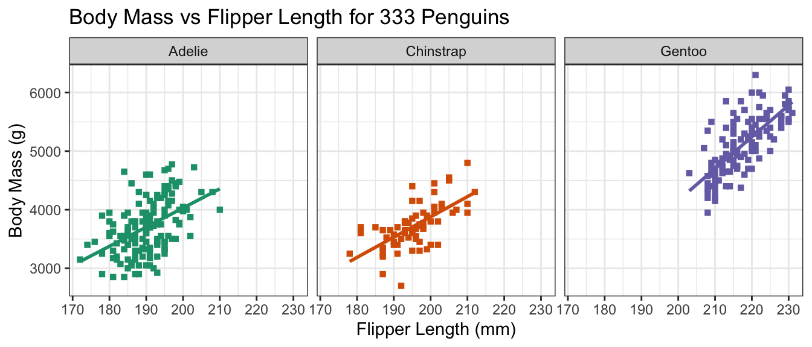
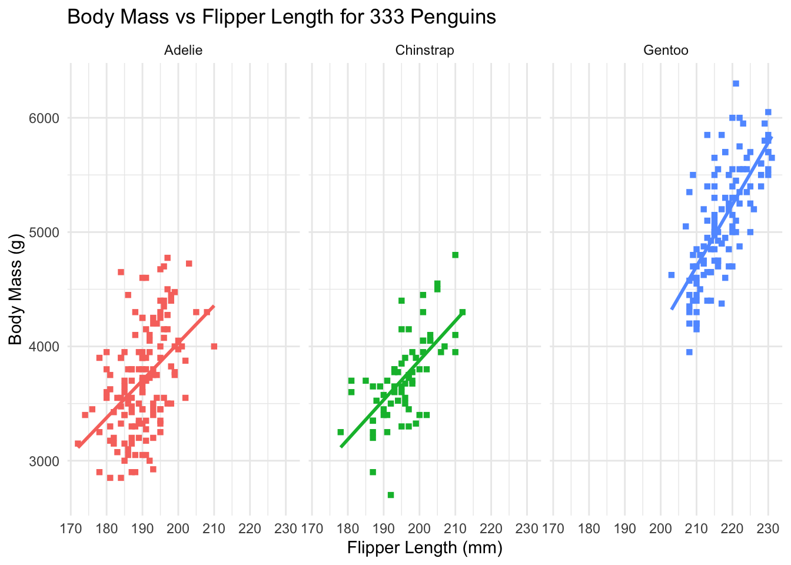
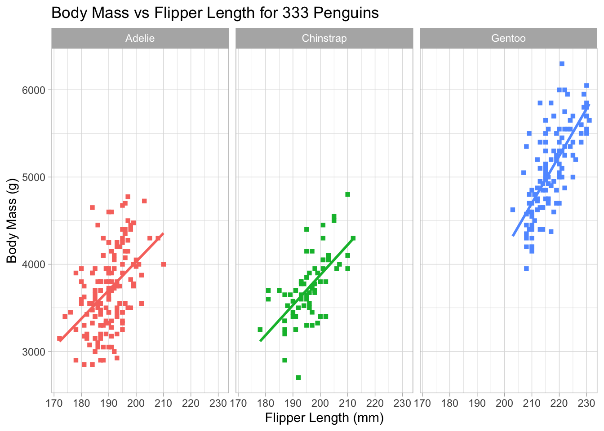
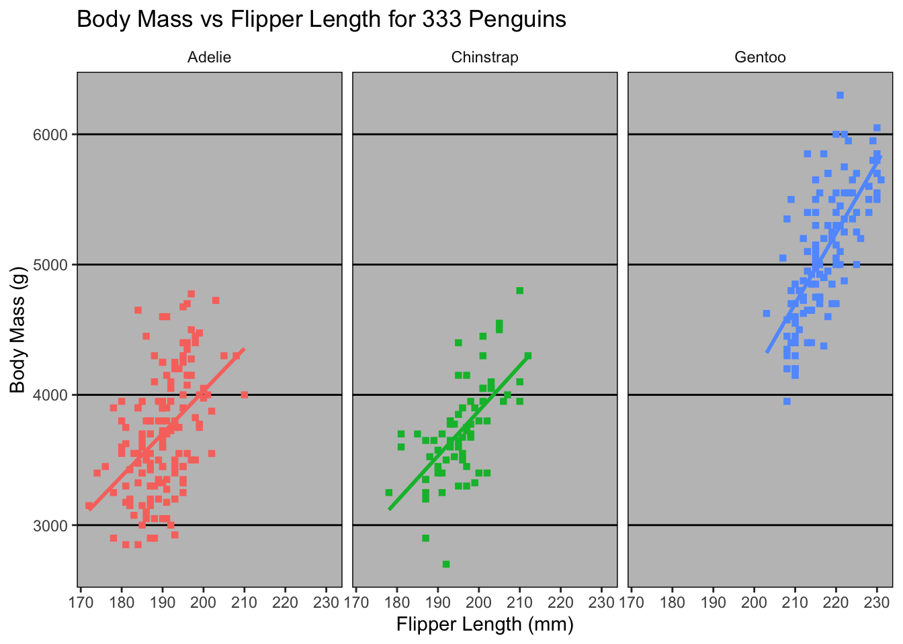
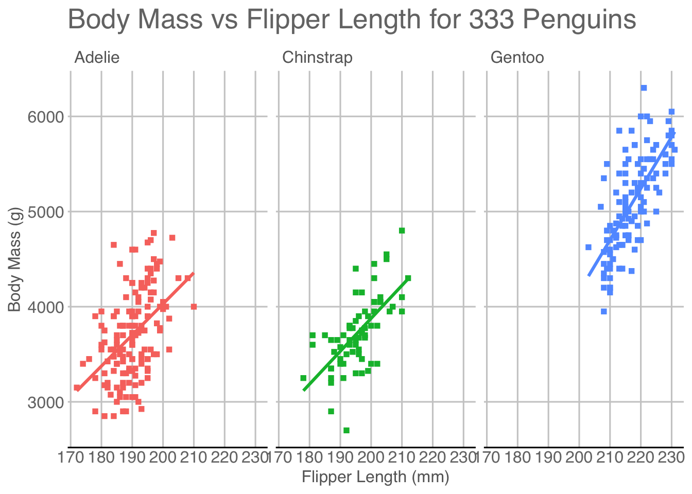

NTD_ENERGY_RAW |>
select(-c(`Reporter Type`,
`Reporting Module`,
`Other Fuel`,
`Other Fuel Description`)) |>
mutate(`Bunker Fuel` = ...)
Software Tools for Data Analysis
STA 9750
Michael Weylandt
Week 7
STA 9750 Mini-Project #01
Grades returned this afternoon.
Review regrade policy and late work policy if you have questions.
STA 9750 Mini-Project #02
MP#02 - TBD
Due 2025-10-24 at 11:59pm ET
- GitHub post (used for peer feedback) AND Brightspace
- Start early to avoid Git issues
. . .
Pay attention to the rubric
- Writing and presentation are about 50% of your grade
- Evaluated on rigor and thoughtfulness
- Use what you learned from MP#01
- Turn in something - 20% ‘free points’ are nothing to scoff at
STA 9750 Mini-Project #02
A few students have reported issues with rate-limiting on the EIA SEP site. Re-running the code seems to resolve issues.
My download code is written to save the files locally, so only needs to succeed once.
. . .
One student reported NA conversion warnings in processing the NTD data. These were harmless, but I’ve modified the provided code to suppress these warnings.
In brief: update to NTD now uses dashes in a few places for missing data and NA warning came up when trying to conver these to numeric values
STA 9750 Mini-Project #02
Remember that “non-standard” column names require use of backticks:
Feedback
I’ve started to return Proposal Feedback (via email) - will finish tomorrow
MP#01 grades to follow
Pre-Assignments
Brightspace - Wednesdays at 11:45
- Reading, typically on course website
- Brightspace auto-grades
- I have to manually change to completion grading
Next pre-assignment is 2025-10-27 at 11:59pm ET:
- Includes an optional (but really great) lecture on data visualization from Di Cook (Monash B School (AUS))
. . .
Thank you for FAQs and (honest) team feedback. Keep it coming!
Course Support
- Synchronous
- Office Hours 2x / week
- MW Office Hours on Tuesdays + Thursday for rest of semester
- No OH during Spring Break
- Office Hours 2x / week
- Asynchronous
- Piazza (\(<30\) minute average response time)
Thanks to DS for helping peers on Piazza!
Upcoming Week
Due Wednesday at 11:45pm:
- Pre-Assignment #08 (Brightspace)
- Interactive Tools for Data Visualization
- MP #02 on GitHub AND Brightspace
Teaching Observation
On April 3rd, Prof. Brandwein will sit in and observe class
- You don’t need to do anything different - just an FYI
Additional Resources
- C. Wilke. Fundamentals of Data Visualization
- K. Healy. Data Visualization
- H. Wickham
ggplot2: Elegant Visualizations for Data Analysis
. . .
- B. Yu and R. Barter Veridical Data Science
Pre-Assignment #07 FAQs
FAQ: ggplot2 vs Tableau
- Tableau
- $$$
- IT department automatically integrates with data sources
- Easy, if it does what you want
ggplot2- Free
- Can use arbitrary data sources, with effort
- Flexible / customizable
FAQ: ggplot2 vs matplotlib
ggplot2- Data visualizations
- Enforces “good practice” via
gg
matplotlib- Scientific visualizations
- More flexible for good or for ill
- Inspired by
Matlabplotting
Closest Python analogue to ggplot2 is seaborn
FAQ: Why use + instead of |>
ggplot2is older than|>- Per H. Wickham: if
ggplot3ever gets made, will use|> - Unlikely to change: too much code depends on it
FAQ: Performance
I tried an interactive plot with \(n=132,000\) points, but it brought my computer to a halt. [Ed. Paraphrased]
That’s a lot of plots!!
ggplot2 is itself pretty fast, but it depends on (possibly slow) graphics backends
- Different file types implement graphics differently.
- You should also think about overplotting / pre-processing
FAQ: Overplotting
Large data sets can lead to overplotting:
- Points “on top of” each other
- Can also occur with “designed” experiments / rounded data
Ways to address:
geom_jittergeom_hex
FAQ: Overplotting
Jitter: add a bit of random noise so points don’t step on each other
library(ggplot2); library(patchwork)
p <- ggplot(mpg, aes(cyl, hwy))
p1 <- p + geom_point() + ggtitle("geom_point")
p2 <- p + geom_jitter() + ggtitle("geom_jitter")
p1 + p2FAQ: Hexagonal Binning
Little “heatmaps” of counts. Hexagons to avoid weird rounding artifacts
library(ggplot2); library(patchwork)
p <- ggplot(diamonds, aes(carat, price))
p1 <- p + geom_point() + ggtitle("geom_point")
p2 <- p + geom_hex() + ggtitle("geom_hex")
p1 + p2Warning: Computation failed in `stat_binhex()`.
Caused by error in `compute_group()`:
! The package "hexbin" is required for `stat_bin_hex()`.FAQ: Inside vs. Outside aes()
aes maps data to values. Outside of aes, set constant value
library(ggplot2)
ggplot(penguins,
aes(x=bill_len, y=bill_dep, color=species)) +
geom_point()Warning: Removed 2 rows containing missing values or values outside the scale range
(`geom_point()`).
FAQ: Inside vs. Outside aes()
aes maps data to values. Outside of aes, set constant value
library(ggplot2)
ggplot(penguins,
aes(x=bill_len, y=bill_dep))+ geom_point(color="blue")Warning: Removed 2 rows containing missing values or values outside the scale range
(`geom_point()`).FAQ: Global vs geom_ specific aes()
- Elements set in
ggplot()apply to entire plot - Elements set in specific
geomapply there only- Override globals
library(ggplot2)
ggplot(penguins,
aes(x=bill_len, y=bill_dep, color=species))+
geom_smooth() +
geom_point(color="blue")`geom_smooth()` using method = 'loess' and formula = 'y ~ x'Warning: Removed 2 rows containing non-finite outside the scale range
(`stat_smooth()`).Warning: Removed 2 rows containing missing values or values outside the scale range
(`geom_point()`).FAQ: How to choose plot types
Two “modes”
- Exploratory data analysis. Quick, rapid iteration, for your eyes only
- Let the data tell you a story
- Low pre-processing: scatter plots, lines, histograms
- “Publication quality”. Polished,
- You tell the reader a story
- More processing, more modeling: trends, line segments, ribbons
FAQ: Color Palettes
Three types of color palettes:
- Sequential: ordered from 0 to “high”
- Example: rain forecast in different areas
- Diverging: ordered from -X to +X with meaningful 0 in the middle
- Example: political leaning
- Qualitative: no ordering
. . .
When mapping quantitative variables to palettes (sequential/diverging), two approaches:
- Binned: \([0, 1)\) light green, \([1, 3)\) medium green; \([3, 5]\) dark green
- Continuous
FAQ: Color Palettes
library(ggplot2)
ggplot(penguins, aes(x=bill_len, y=bill_dep, color=body_mass)) +
geom_point() + theme_bw() +
scale_color_distiller(type="seq") # ContinuousWarning: Removed 2 rows containing missing values or values outside the scale range
(`geom_point()`).
FAQ: Color Palettes
library(ggplot2)
ggplot(penguins, aes(x=bill_len, y=bill_dep, color=body_mass)) +
geom_point() + theme_bw() +
scale_color_fermenter(type="seq") # BinnedWarning: Removed 2 rows containing missing values or values outside the scale range
(`geom_point()`).FAQ: Color Palettes
library(ggplot2)
ggplot(penguins, aes(x=bill_len, y=bill_dep, color=body_mass)) +
geom_point() + theme_bw() +
scale_color_fermenter(type="seq") # Binned + SequentialWarning: Removed 2 rows containing missing values or values outside the scale range
(`geom_point()`).FAQ: Color Palettes
library(ggplot2)
ggplot(penguins, aes(x=bill_len, y=bill_dep, color=body_mass)) +
geom_point() + theme_bw() +
scale_color_fermenter(type="qual") # Binned + QualitativeWarning: Using a discrete colour palette in a binned scale
ℹ Consider using `type = "seq"` or `type = "div"` insteadWarning: Removed 2 rows containing missing values or values outside the scale range
(`geom_point()`).FAQ: Color Palettes
library(ggplot2)
ggplot(penguins, aes(x=bill_len, y=bill_dep, color=body_mass)) +
geom_point() + theme_bw() +
scale_color_fermenter(type="div") # Binned + DivergingWarning: Removed 2 rows containing missing values or values outside the scale range
(`geom_point()`).FAQ: How to “hard-code” colors
library(dplyr)
data <- data.frame(x = rnorm(5),
y = rnorm(5),
group = c("a", "a", "b", "b", "b"))
data |>
group_by(group) |>
mutate(n_count = n()) |>
ungroup() |>
mutate(color = ifelse(n_count == max(n_count), "red", "black")) |>
ggplot(aes(x=x, y=y, shape=group, color=color)) +
geom_point() +
scale_color_identity()FAQ: How to Customize Themes
Built-in themes + ggthemes package:
library(ggplot2); library(ggthemes); library(ggpmisc)
p <- ggplot(penguins,
aes(x=flipper_len,
y=body_mass,
color=species)) +
geom_point() +
stat_poly_line(se=FALSE,
color="black") +
stat_poly_eq() +
xlab("Flipper Length (mm)") +
ylab("Body Mass (g)") +
scale_color_brewer(type="qual",
palette=2,
name="Species") +
facet_wrap(~species)FAQ: Themes
Default theme (ggplot2::theme_grey()):
pWarning: Removed 2 rows containing non-finite outside the scale range
(`stat_poly_line()`).Warning: Removed 2 rows containing non-finite outside the scale range
(`stat_poly_eq()`).Warning: Removed 2 rows containing missing values or values outside the scale range
(`geom_point()`).FAQ: Themes
Black and White theme (ggplot2::theme_bw()):
p + theme_bw()Warning: Removed 2 rows containing non-finite outside the scale range
(`stat_poly_line()`).Warning: Removed 2 rows containing non-finite outside the scale range
(`stat_poly_eq()`).Warning: Removed 2 rows containing missing values or values outside the scale range
(`geom_point()`).FAQ: Themes
Minimal theme (ggplot2::theme_minimal()):
p + theme_minimal()Warning: Removed 2 rows containing non-finite outside the scale range
(`stat_poly_line()`).Warning: Removed 2 rows containing non-finite outside the scale range
(`stat_poly_eq()`).Warning: Removed 2 rows containing missing values or values outside the scale range
(`geom_point()`).FAQ: Themes
Light theme (ggplot2::theme_light()):
p + theme_light()Warning: Removed 2 rows containing non-finite outside the scale range
(`stat_poly_line()`).Warning: Removed 2 rows containing non-finite outside the scale range
(`stat_poly_eq()`).Warning: Removed 2 rows containing missing values or values outside the scale range
(`geom_point()`).
FAQ: Themes
Dark theme (ggplot2::theme_dark()):
p + theme_dark()Warning: Removed 2 rows containing non-finite outside the scale range
(`stat_poly_line()`).Warning: Removed 2 rows containing non-finite outside the scale range
(`stat_poly_eq()`).Warning: Removed 2 rows containing missing values or values outside the scale range
(`geom_point()`).
FAQ: Themes
Excel theme (ggthemes::theme_excel()):
p + theme_excel()Warning: Removed 2 rows containing non-finite outside the scale range
(`stat_poly_line()`).Warning: Removed 2 rows containing non-finite outside the scale range
(`stat_poly_eq()`).Warning: Removed 2 rows containing missing values or values outside the scale range
(`geom_point()`).
FAQ: Themes
Google Docs theme (ggthemes::theme_gdocs()):
p + theme_gdocs()Warning: Removed 2 rows containing non-finite outside the scale range
(`stat_poly_line()`).Warning: Removed 2 rows containing non-finite outside the scale range
(`stat_poly_eq()`).Warning: Removed 2 rows containing missing values or values outside the scale range
(`geom_point()`).FAQ: Themes
The Economist theme (ggthemes::theme_economist()):
p + theme_economist()Warning: Removed 2 rows containing non-finite outside the scale range
(`stat_poly_line()`).Warning: Removed 2 rows containing non-finite outside the scale range
(`stat_poly_eq()`).Warning: Removed 2 rows containing missing values or values outside the scale range
(`geom_point()`).FAQ: Themes
The Economist theme (ggthemes::theme_economist()):
p + theme_economist()Warning: Removed 2 rows containing non-finite outside the scale range
(`stat_poly_line()`).Warning: Removed 2 rows containing non-finite outside the scale range
(`stat_poly_eq()`).Warning: Removed 2 rows containing missing values or values outside the scale range
(`geom_point()`).FAQ: Themes
Solarized theme (ggthemes::theme_solarized()):
p + theme_solarized()Warning: Removed 2 rows containing non-finite outside the scale range
(`stat_poly_line()`).Warning: Removed 2 rows containing non-finite outside the scale range
(`stat_poly_eq()`).Warning: Removed 2 rows containing missing values or values outside the scale range
(`geom_point()`).FAQ: Themes
Solarized2 theme (ggthemes::theme_solarized_2()):
p + theme_solarized_2()Warning: Removed 2 rows containing non-finite outside the scale range
(`stat_poly_line()`).Warning: Removed 2 rows containing non-finite outside the scale range
(`stat_poly_eq()`).Warning: Removed 2 rows containing missing values or values outside the scale range
(`geom_point()`).
FAQ: Themes
Stata theme (ggthemes::theme_stata()):
p + theme_stata()Warning: Removed 2 rows containing non-finite outside the scale range
(`stat_poly_line()`).Warning: Removed 2 rows containing non-finite outside the scale range
(`stat_poly_eq()`).Warning: Removed 2 rows containing missing values or values outside the scale range
(`geom_point()`).FAQ: Themes
Tufte theme (ggthemes::theme_tufte()):
p + theme_tufte()Warning: Removed 2 rows containing non-finite outside the scale range
(`stat_poly_line()`).Warning: Removed 2 rows containing non-finite outside the scale range
(`stat_poly_eq()`).Warning: Removed 2 rows containing missing values or values outside the scale range
(`geom_point()`).
FAQ: Themes
Wall Street Journal theme (ggthemes::theme_wsj()):
p + theme_wsj()Warning: Removed 2 rows containing non-finite outside the scale range
(`stat_poly_line()`).Warning: Removed 2 rows containing non-finite outside the scale range
(`stat_poly_eq()`).Warning: Removed 2 rows containing missing values or values outside the scale range
(`geom_point()`).FAQ: Themes
Many more online:
- ThemePark for movie themes
FAQ: Order of Layers
Order of layers technically matters, but the effect is small
p1 <- ggplot(penguins, aes(x=bill_len, y=flipper_len)) +
geom_point(color="black") +
geom_smooth(color="blue", method="lm") + ggtitle("Line on points")
p2 <- ggplot(penguins, aes(x=bill_len, y=flipper_len)) +
geom_smooth(color="blue", method="lm") +
geom_point(color="black") + ggtitle("Points on line")
p1 + p2`geom_smooth()` using formula = 'y ~ x'Warning: Removed 2 rows containing non-finite outside the scale range
(`stat_smooth()`).Warning: Removed 2 rows containing missing values or values outside the scale range
(`geom_point()`).`geom_smooth()` using formula = 'y ~ x'Warning: Removed 2 rows containing non-finite outside the scale range (`stat_smooth()`).
Removed 2 rows containing missing values or values outside the scale range
(`geom_point()`).
FAQ: Order of layers
Order matters more with theme. Adding a theme_*() will override any theme() customization you did:
p1 <- p + theme_bw() + theme(legend.position="bottom")
p2 <- p + theme(legend.position="bottom") + theme_bw()
p1 + p2Warning: Removed 2 rows containing non-finite outside the scale range
(`stat_poly_line()`).Warning: Removed 2 rows containing non-finite outside the scale range
(`stat_poly_eq()`).Warning: Removed 2 rows containing missing values or values outside the scale range
(`geom_point()`).Warning: Removed 2 rows containing non-finite outside the scale range
(`stat_poly_line()`).Warning: Removed 2 rows containing non-finite outside the scale range
(`stat_poly_eq()`).Warning: Removed 2 rows containing missing values or values outside the scale range
(`geom_point()`).FAQ: stat_poly_{line,eq} vs geom_smooth
By default geom_smooth fits a generalized additive model (GAM)
ggpmisc::stat_poly_{line,eq} fit linear models, so they can expose more machinery.
. . .
What is a GAM?
- Take 9890 with me (typically Spring semester) to find out!
- Free Course: “GAMs in R” from Noam Ross
FAQ: Titles and Captions
ggplot() +
labs(title="Title", subtitle="Subtitle", caption="Caption",
tag="Tag", alt="Alt-Text", alt_insight="Alt-Insight")
+ggtitle("text") is just shorthand for +labs(title="text")
FAQ: Relative Importance of Aesthetics
Perceptually:
- Location > Color > Size > Shape
Humans are better at:
- Length > Area > Volume
FAQ: When to Use Facets?
Facets are group_by for plots. Useful for
- Distinguishing intra- vs inter-group trends
- Avoiding overplotting
FAQ: Simpson’s Paradox
Code
library(datasauRus)
library(dplyr)
simpsons_paradox <- datasauRus::simpsons_paradox |>
filter(dataset == "simpson_2") |>
mutate(group = cut(x + y, c(0, 55, 80, 120, 145, 200),
labels = LETTERS[1:5])) |>
select(- dataset)ggplot(simpsons_paradox, aes(x=x, y=y)) +
geom_point() + geom_smooth(method="lm")`geom_smooth()` using formula = 'y ~ x'
FAQ: Simpson’s Paradox
ggplot(simpsons_paradox, aes(x=x, y=y, color=group)) +
geom_point() + geom_smooth(method="lm") + facet_grid(~group)`geom_smooth()` using formula = 'y ~ x'FAQ: UCB Graduate Admissions
1973: UC Berkeley was concerned about bias in Grad School Admissions
- Higher fraction of men admitted than women
- Bickel, Hammell, O’Connell asked to study
- When they try to find the source of this bias, there is none!
- Each department admits women at a higher rate than men
- Women applied to more selective programs at a higher rate
This phenomenon occurs throughout the social sciences: the best doctors have the worst patient outcomes
. . .
BHO note:
Women are shunted by their socialization and education toward fields of graduate study that are generally more crowded, less productive of completed degrees, and less well funded, and that frequently offer poorer professional employment prospects.
. . .
FAQ: Twin Axes Plots
How can I implement a dual (twin) axis plot in
ggplot2?
Disfavored. But if you must …
Doesn’t allow arbitrary secondary axes; allows transformed axes (e.g., Celsius and Fahrenheit)
FAQ: Embedding images in ggplot
See the ggimage or ggflags package for images as “points”:
if(!require("ggflags")){
devtools::install_github("jimjam-slam/ggflags");
}Loading required package: ggflagslibrary(ggflags)
d <- data.frame(x=rnorm(50), y=rnorm(50),
country=sample(c("ar","fr", "nz", "gb", "es", "ca"), 50, TRUE),
stringsAsFactors = FALSE)
ggplot(d, aes(x=x, y=y, country=country, size=x)) +
geom_flag() +
scale_country()
FAQ: Embedding Images
See cowplot::draw_image() for image background:
library(cowplot)
Attaching package: 'cowplot'The following object is masked from 'package:ggthemes':
theme_mapThe following object is masked from 'package:patchwork':
align_plotsThe following object is masked from 'package:lubridate':
stampp <- ggplot(iris, aes(x = Sepal.Length, fill = Species)) +
geom_density(alpha = 0.7) +
scale_y_continuous(expand = expansion(mult = c(0, 0.05))) +
theme_half_open(12)
logo_file <- system.file("extdata", "logo.png", package = "cowplot")
ggdraw() +
draw_image(
logo_file, scale = .7
) +
draw_plot(p)Warning: Package `magick` is required to draw images. Image not drawn.
Today
Diving Deeper with ggplot2
Data Sets:
diamondsfrom theggplot2packagecdiacfrom theCVXRpackagegapminderfrom thegapminderpackage
You need to install CVXR and gapminder now.
Exercise: Lab #07
Diving Deeper: Learning Goals
Today:
- Fluency with basic
geoms - Animation (Just a bit)
Next Week:
- Interactive graphics
- Dashboards
- Spatial Data (time allowing)
Breakout Rooms
| Room | Team | Room | Team | |
|---|---|---|---|---|
| 1 | VH + SG + DS + DL | 5 | GB + RJ + FS + MH | |
| 2 | HZ + JLL + CA | 6 | EM + AK + GMdS + JL | |
| 3 | MT + CW + VG + GS + CWo. | 7 | SJB + JC + SB + ZS | |
| 4 | SD + GO + CFGF |
Wrap-Up
Looking Ahead
Course Structure:
- One more week on analyzing data you already have
- Then 3 weeks on getting data into
R - One brief week on statistical modeling
. . .
Course Projects:
- Very excited by your proposals!
- Please send me questions anytime - my goal is to help you achieve your goals
Looking Ahead
My Learning Goals:
- (IMO) Most ‘practical’ course we offer
- Exposure to tools and, more importantly, techniques for data analysis
- My goal is to give you tools to achieve your goals in 3, 6, 12, 48 months
- Biggest failure for me is catching up with you in 2-3 years and hearing you feel held back by lack of skills.
- Investment of time now, but payoff throughout your career
Life Tip of the Week
Making the most of Amazon
- Free Trial and Discounted Rate Amazon Prime for Students
- Amazon Prime Visa by Chase: No annual fee + 5% cash back (or more) on all Amazon Purchases
- Camel Camel Camel
- Price history for all Amazon items (see if you’re getting a good deal)
- Price drop alert emails (get custom messages when an item goes on sale)